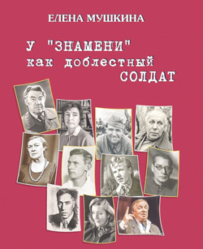

Новая книга · 2026
У «Знамени» как доблестный солдат
«Семейный альбом» — так автор определила жанр этой книги. Она — о маме, Нине Леопольдовне Мушкиной, которая с января 1942 года больше тридцати лет проработала машинисткой в журнале «Знамя». Через её пишущую машинку прошли рукописи Казакевича, Симонова, Фадеева, Веры Инбер.
«Там, конечно, есть и о маме. Но я хотела только о ней», — говорит Елена Романовна о прежних книгах.